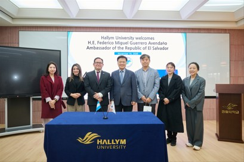

한림대학교, 주한 엘살바도르 대사와 간담회 개최 및 학술 협력 기회 모색
2026.11.16 · 한림대학교 커뮤니케이션팀 · 보도자료 배포 2026. 11. 16.(월)

한림대학교(총장 최양희)가 11월 16일(월) 본교를 방문한 페데리코 미겔 게레로 아벤다뇨(Federico Miguel Guerrero Avendaño) 주한 엘살바도르 대사와 마르셀라 소사 공사참사관 및 대사관 관계자들과 함께 간담회를 개최했다.
이날 대사는 엘살바도르 정부가 추진하는 주요 교육혁신 정책을 소개하며, 국가 교육 프로그램인 엘살바도르의 부활(El Salvador Renace)과 국가 교육 시스템 전반에 인공지능을 도입하려는 나이브 부켈레 대통령의 정책적 추진 의지를 강조했다.
또한 교육 인프라 개선, 디지털 전환, 교육환경 강화와 더불어 해외 장학금 및 연수 프로그램 기회를 확대하기 위한 정부의 국제협력 노력에 대해서도 설명했다.
아울러 대사는 한림대학교와의 교육협력 관계를 강화하고 새로운 학술협력 기회 모색에 대한 엘살바도르의 관심을 전달했다.
한림대학교는 대학의 주요 발전 전략과 차별화된 교육 역량 등을 소개했으며, 특히 KELI(K-University AI EduTech and Learning Initiative) 플랫폼의 인공지능 기반 교수·학습 모델과 교육 서비스 등을 살펴보며, 한림대학교의 교육 혁신 및 확산 사례를 공유했다.
특히
- 학생 교환 프로그램 및 단기 학술 연수 프로그램
- 엘살바도르 학생들의 한국어 및 한국 문화 학습 기회 확대
- 엘살바도르 대학 및 교육부, 외교부 등 공공기관과의 학술협력 양해각서(MOU) 체결
- 공동연구 프로젝트 추진 및 교수 교류
- 한국 유학을 희망하는 엘살바도르 학생들을 위한 장학 프로그램 발굴 등이 제시됐다.
또한 엘살바도르의 디지털 및 인공지능 교육 정책과 한림대학교의 교육혁신 역량 간 시너지 창출 가능성을 살펴봤으며, 이를 바탕으로 공동 사업을 추진해 청년 인재 육성과 미래 세대의 교육에 기여하는 방안도 논의했다.
이번 방문은 대한민국과 엘살바도르 간 학술적 유대를 강화하기 위한 첫걸음으로, 양국 모두에 도움이 되는 향후 교육협력 및 교류 사업을 구체화할 수 있는 새로운 가능성을 여는 계기가 됐다.
출처: 한림대학교 홍보 보도자료.
본문과 사진의 저작권은 한림대학교에 있습니다.